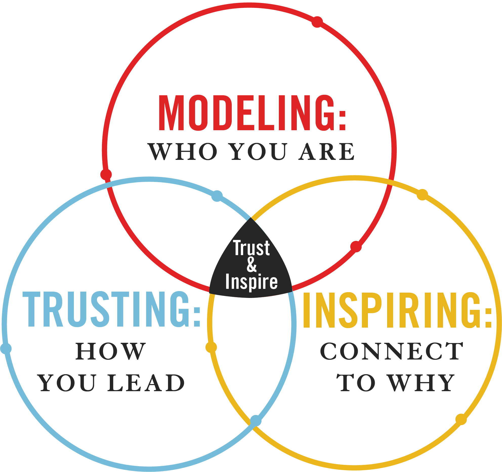

People follow credibility, not popularity.
“It doesn't make sense to hire smart people and tell them what to do; we hire smart people so they can tell us what to do.”
- Steve Jobs
"The greatest danger for most of us is not that our aim is too high and we miss it, but that it is too low and we reach it."
- Michelangelo
“Treat people as they are, and they will remain as they are. Treat people as they can and should be, and they will become as they can and should be.”
- Goethe
Second hand micromanaging exists, and it's just as harmful.
Listening is not bounding.
Trust makes difficult conversations easier, but they're still difficult.
Trust is not abandonment. A leader remains accountable for setting clear goals.
"Nice job! Are you proud?" is one of the most powerful statements you can make.
A minority of people will abuse trust. This also makes it easier to let them go.